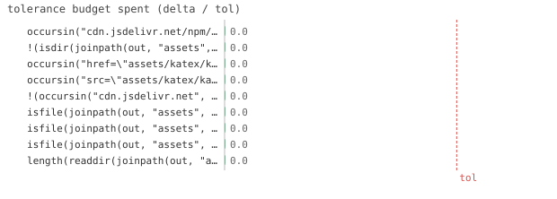

9/9 passed · 0.12s
| id | label | got | want | Δ vs tol (kind) | |
|---|---|---|---|---|---|
| ✓ | t486 | occursin("cdn.jsdelivr.net/npm/katex", html) | 1.0 | 1.0 | 0.0 vs 0.5 (abs) |
| ✓ | t487 | !(isdir(joinpath(out, "assets", "katex"))) | 1.0 | 1.0 | 0.0 vs 0.5 (abs) |
| ✓ | t488 | occursin("href=\"assets/katex/katex.min.css\"", html) | 1.0 | 1.0 | 0.0 vs 0.5 (abs) |
| ✓ | t489 | occursin("src=\"assets/katex/katex.min.js\"", html) | 1.0 | 1.0 | 0.0 vs 0.5 (abs) |
| ✓ | t490 | !(occursin("cdn.jsdelivr.net", html)) | 1.0 | 1.0 | 0.0 vs 0.5 (abs) |
| ✓ | t491 | isfile(joinpath(out, "assets", "katex", "katex.min.css")) | 1.0 | 1.0 | 0.0 vs 0.5 (abs) |
| ✓ | t492 | isfile(joinpath(out, "assets", "katex", "katex.min.js")) | 1.0 | 1.0 | 0.0 vs 0.5 (abs) |
| ✓ | t493 | isfile(joinpath(out, "assets", "katex", "contrib", "auto-render.min.js")) | 1.0 | 1.0 | 0.0 vs 0.5 (abs) |
| ✓ | t494 | length(readdir(joinpath(out, "assets", "katex", "fonts"))) >= 1 | 1.0 | 1.0 | 0.0 vs 0.5 (abs) |

⤓ download{kind=link}